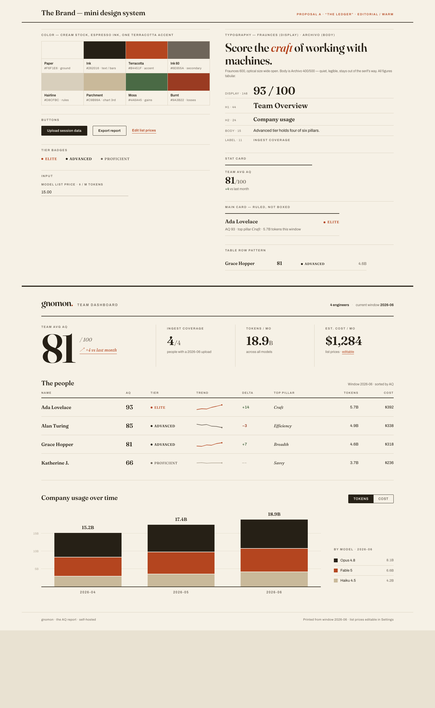
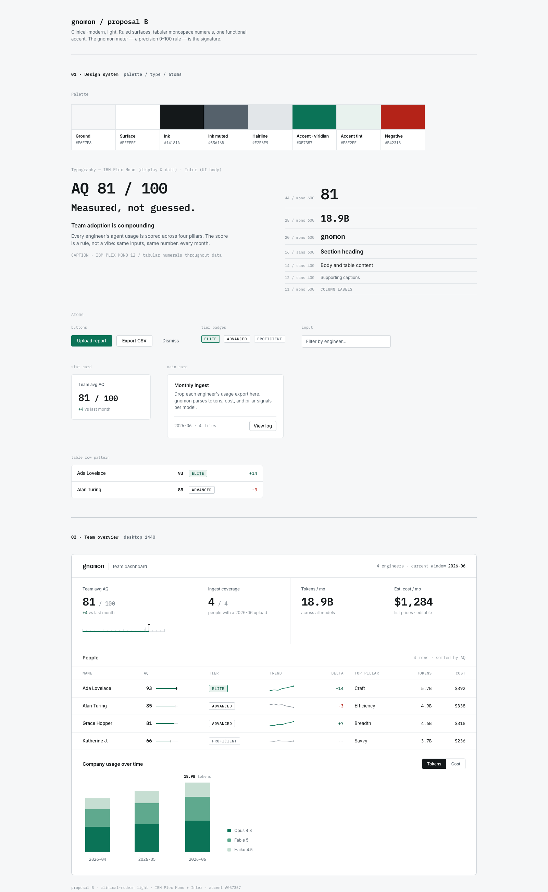
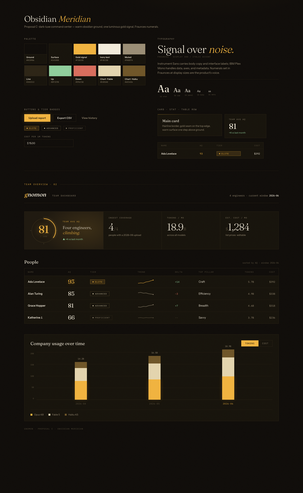

Same real content (Ada / Alan / Grace / Katherine, the four stat cards, the usage chart) — three independent design systems. Each was built by a separate fresh agent running a different design skill, so the spread is genuine. Pick one, or mix (“B’s layout with C’s accent”).


